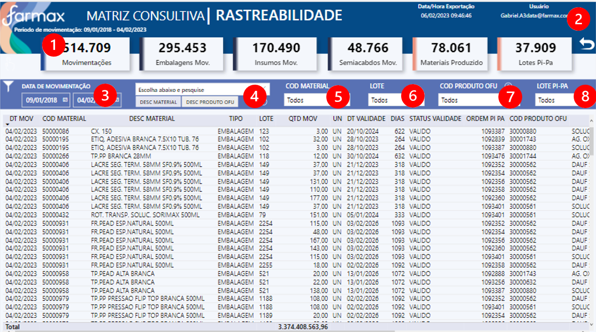

Mapa de Rastreabilidade
Seja bem vindo (a)#
Documentação dos dashboards do setor de Qualidade, clique abaixo e navegue para o App no Power BI Service:
OBJETIVO - RASTREABILIDADE#
É utilizado pelo Controle de Qualidade e Garantia da Qualidade para visualizar a data de validade, calcular a retirada dos produtos da retenção, e rastrear o consumo de materiais dentro da ordem de produção.
FONTE DE DADOS#
let
Fonte = AmazonRedshift.Database("farmax-cluster.cdkgzqhbae0k.us-east-1.redshift.amazonaws.com","farmaxcluster"),
qlt = Fonte{[Name="qlt"]}[Data],
dim_traceability_materials1 = qlt{[Name="dim_traceability_materials"]}[Data]
TABELAS#
-
Rastreabilidade
-
Medidas
-
dCalendario
-
Parâmetro - Data
-
Parâmetro - DT Vencimento
-
Última Atualização
ATUALIZAÇÃO CONJUNTO DE DADOS#
Atualização diária do conjunto de dados, às 06:30 / 08:30 / 10:30 / 12:30 / 14:30 / 16:30 / 18:30.
ACESSO#
Acesso via aplicativo Power BI, da seguinte forma:
-
Acessar powerbi.com.br
-
Ir no painel de Navegação, opção "Aplicativos" ou "Aplicações"
-
Clicar no Aplicativo - Imagem abaixo>
USABILIDADE#
VISÃO GERAL - DISTRIBUIÇÕES#

Glossário:
- Cards resumo numérico
- Botão para limpar filtros
- Visual: Total de Materiais por Status
- Visual: Total de Materiais por Período de Vencimento - Ano / Trimestre / Mês / Dia / Dia da Semana
- Visual: Árvore Hierárquica - Insumos movimentados por utilização
- Visual: Total de Lote PI - PA por Status
- Visual: Total de Lote PI - PA por Período de Vencimento - Ano / Trimestre / Mês / Dia / Dia da Semana
MATRIZ CONSULTIVA - RASTREABILIDADE#

Glossário:
- Cards resumo numérico
- Botão para limpar filtros
- Filtro por Data da Movimentação
- Filtro de Texto por Descrição ou Código do Produto onde foi usado
- Filtro por Código do Material utilizado
- Filtro por Lote do Material utilizado
- Filtro de Texto por Código do Produto onde foi usado
- Filtro Cliente por Lote PI-PA